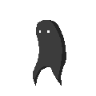
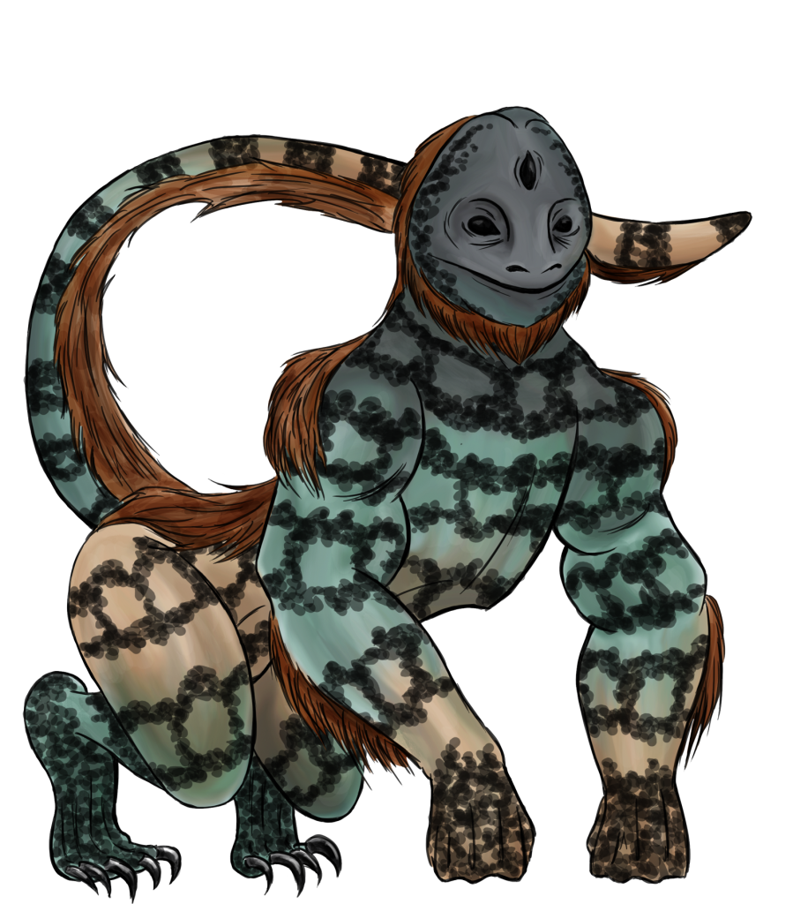
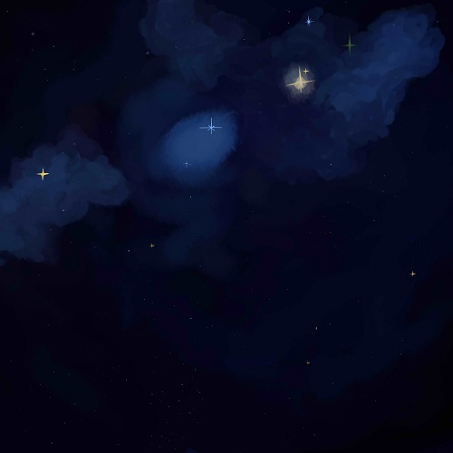
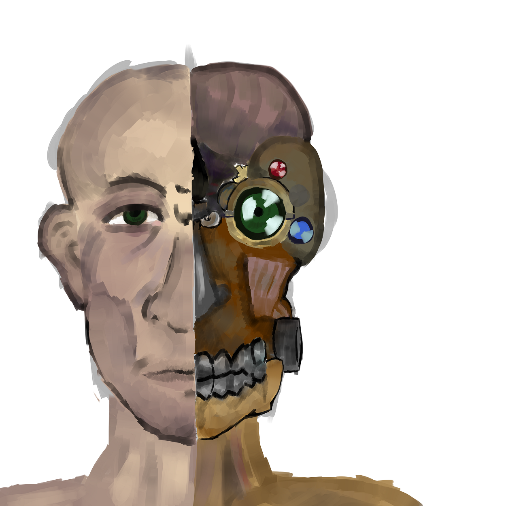
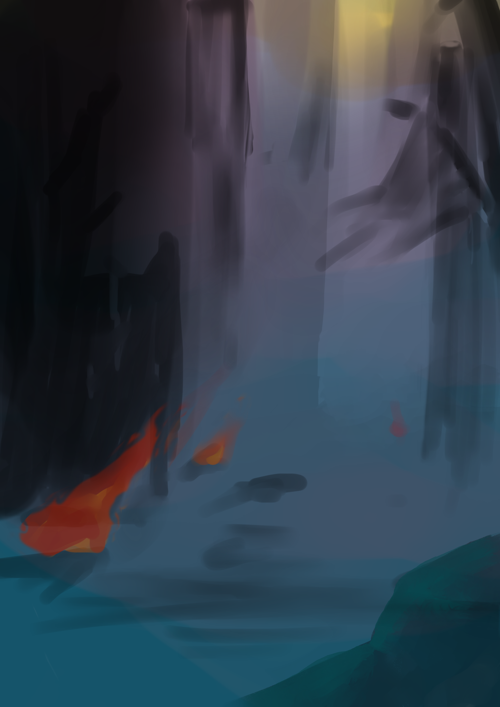
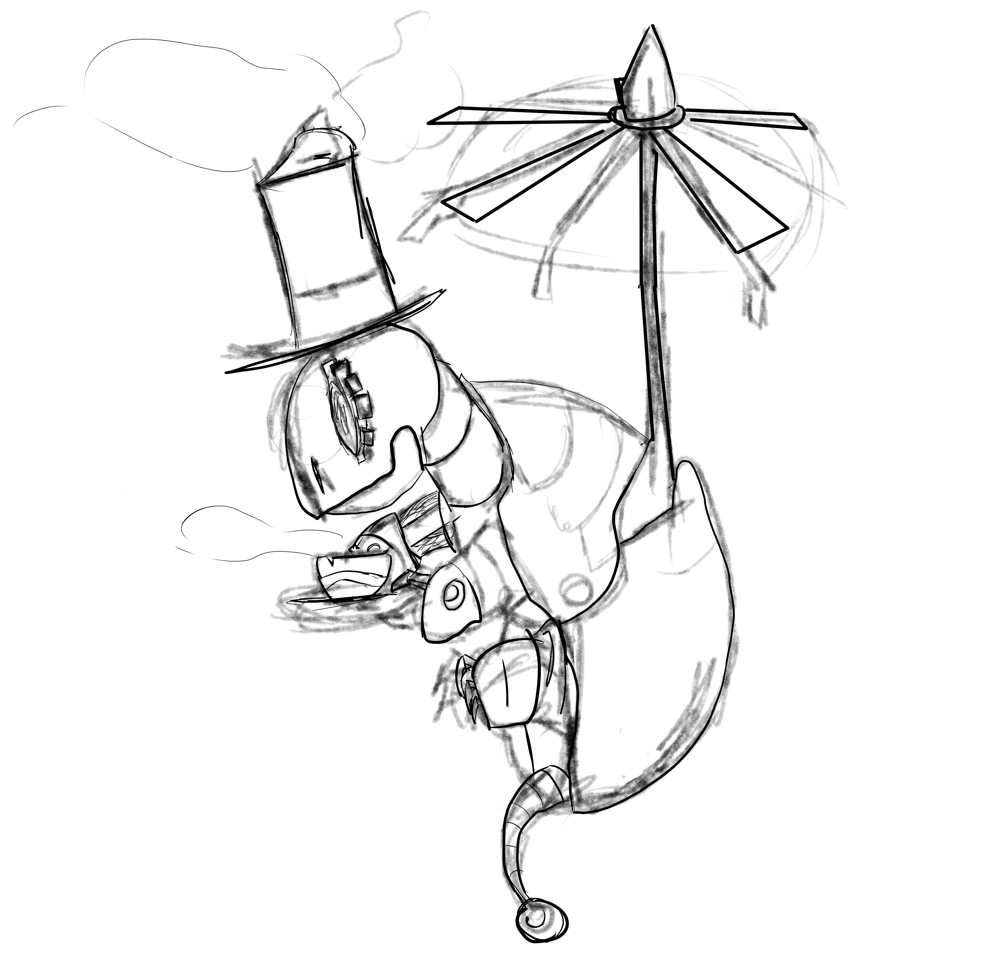
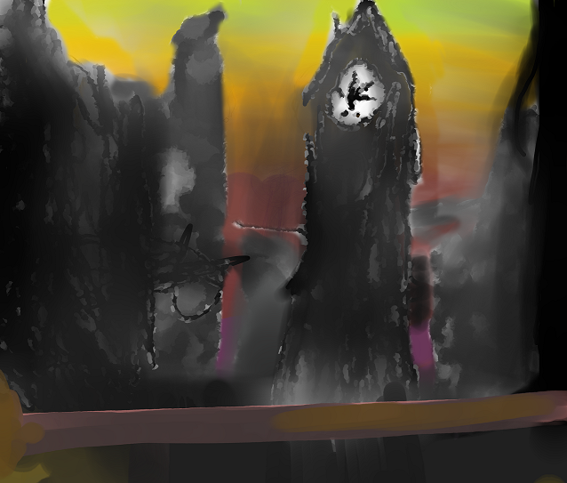

Portfolio
This is a collection of the pieces I've created, contributed to, or directed. If you enjoyed any of these pieces, or if you have any questions concern techniques, approaches or tools, feel free to contact me at malhar.teli@gmail.com
-
These are some of the games Malhar has worked on while attending Northeastern University
RED
Created in GameMaker Studio, RED is a side-scrolling 2D action game that was created as an experiment in game narrative. Malhar served as Level Designer and Background Artist.
Untitled (GGJ14)
This project was developed during the Global Game Jam held in Northeastern University during 2014. The team aimed to create a game that would provide the player with an epiphany at the end. Malhar served as the Background Artist.
-
Digital Art samples
A painting of space. Made in Paint Tool Sai with refining in Photoshop CS6.
An experimentation made with a steampunk style in mind.

Malhar painted his dog with a Pen Tablet and a laptop.
A little practice image of a devestated street.
A rather dapper-looking steam turtle created for a game proposal
A picture created in Photoshop CS6
This a storyboard made using composites of a 3D model render and digital painting through layers.
- ...
-
Experiments
Mistakes were made. Horrible mistakes.